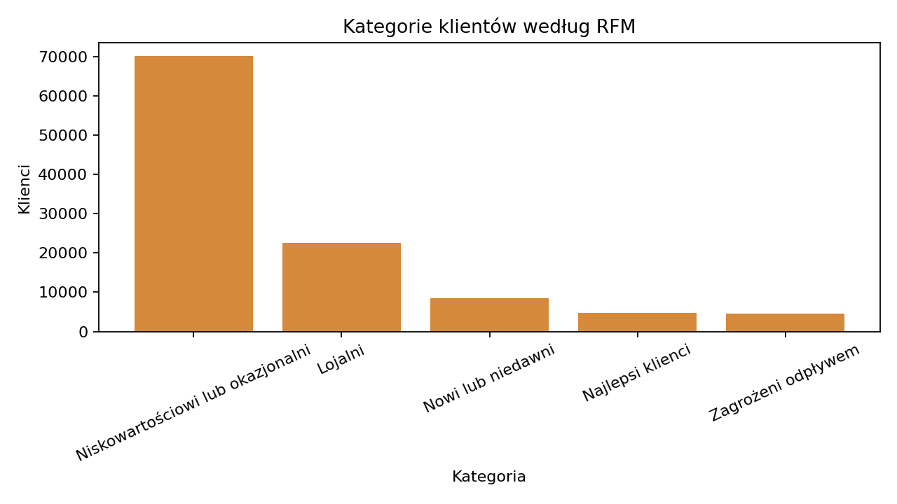
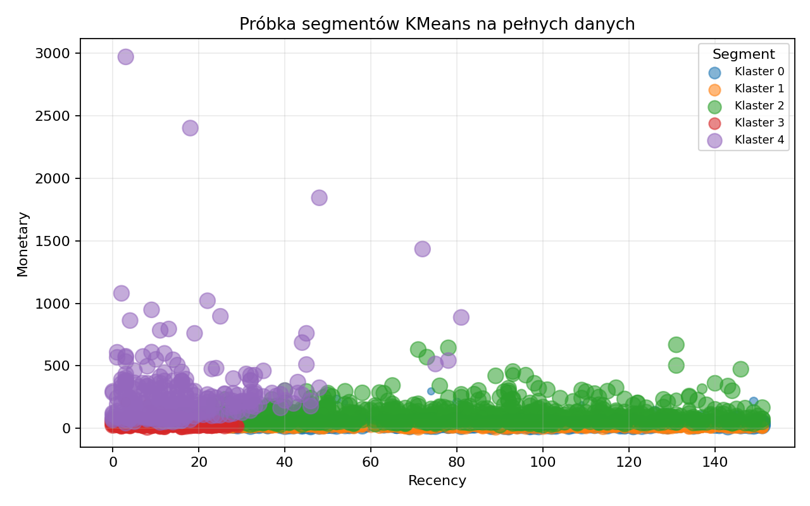
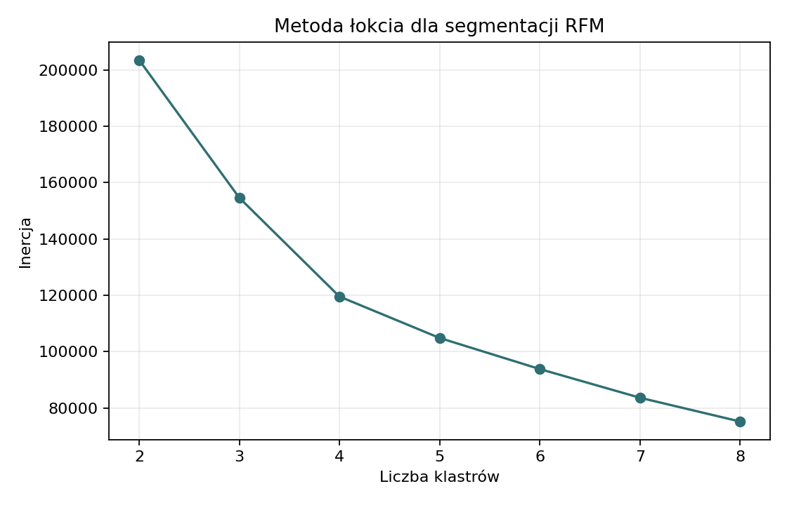
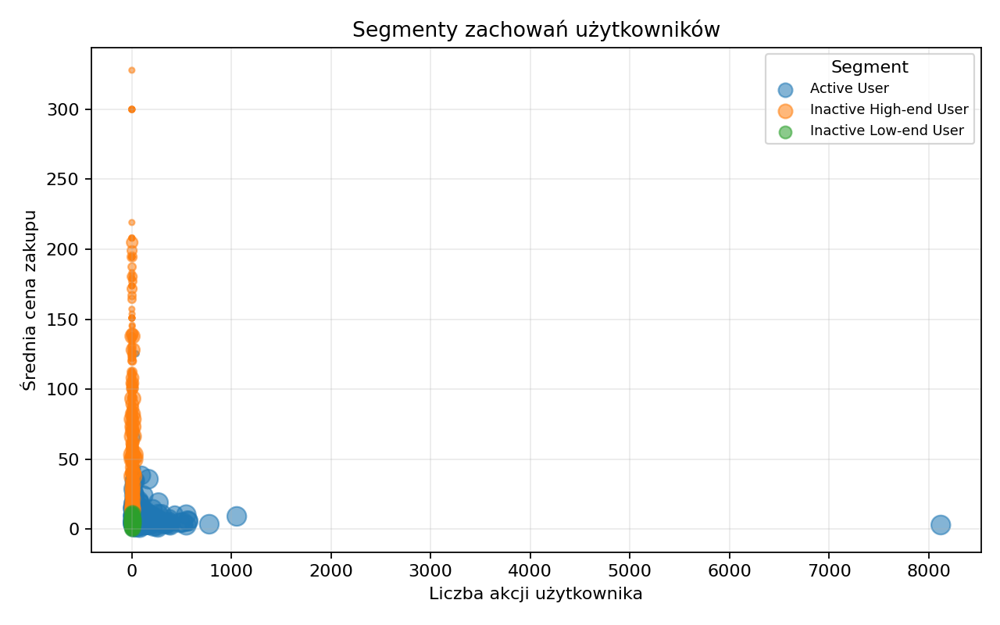

Customer Segmentation
RFM, KMeans i segmentacja zachowań
Najpierw biznes: komu poświęcić uwagę?
Segmentacja jest potrzebna, bo klienci nie generują wartości równomiernie. W pełnych danych top 10% klientów kupujących odpowiada za 43,0% przychodu.
| Grupa klientów | Klienci | Udział klientów | Przychód | Udział przychodu |
|---|---|---|---|---|
| Top 1% | 1 105 | 1.0 | 710142.28 | 11.18 |
| Top 5% | 5 526 | 5.0 | 1892626.15 | 29.8 |
| Top 10% | 11 052 | 10.0 | 2730964.09 | 42.99 |
| Top 20% | 22 104 | 20.0 | 3767433.2 | 59.31 |
To uzasadnia osobne profilowanie kupujących, ale zawęża populację: RFM opisuje 110,5 tys. klientów z zakupem, a nie wszystkich 1,64 mln użytkowników aktywnych w danych.
RFM: wartość zakupowa klienta
RFM sprowadza historię zakupów do trzech prostych cech: kiedy klient kupił ostatnio, jak często kupował i ile wydał.
| Kategoria | Klienci | Recency | Frequency | Monetary |
|---|---|---|---|---|
| Lojalni | 22571 | 67.65 | 23.14 | 121.25 |
| Najlepsi klienci | 4796 | 13.17 | 55.79 | 280.67 |
| Niskowartościowi lub okazjonalni | 70093 | 79.57 | 5.72 | 25.01 |
| Nowi lub niedawni | 8496 | 6.87 | 6.23 | 27.96 |
| Zagrożeni odpływem | 4562 | 105.16 | 9.44 | 60.97 |

- Dane wejściowe: wyłącznie zdarzenia
purchase. - Cechy:
recencyw dniach,frequencyjako liczba pozycji zakupowych,monetaryjako sumaprice. - Dla modelowania KMeans cechy są transformowane przez
log1pi skalowane. - RFM jest bardziej interpretowalne biznesowo niż surowe eventy.
KMeans RFM: grupowanie podobnych profili
KMeans grupuje klientów o podobnym profilu RFM. W raporcie etykiety pozostają neutralne (Klaster X), a interpretacja wynika z profilu segmentu.
| Segment | Klienci | Udział klientów | Recency | Frequency | Monetary | Przychód |
|---|---|---|---|---|---|---|
| Klaster 0 | 34811 | 31.5 | 88.49 | 7.28 | 41.71 | 1451816.57 |
| Klaster 1 | 33398 | 30.22 | 84.97 | 2.73 | 14.66 | 489575.0 |
| Klaster 2 | 19719 | 17.84 | 75.52 | 23.27 | 105.17 | 2073778.49 |
| Klaster 3 | 15067 | 13.63 | 11.95 | 6.08 | 32.79 | 493975.78 |
| Klaster 4 | 7523 | 6.81 | 15.71 | 52.04 | 244.94 | 1842684.45 |

Interpretacja klastrów powinna wynikać z tabeli profili: liczebności, świeżości zakupu, liczby pozycji zakupowych i wartości price. Sam numer klastra jest techniczny i może zmienić się po ponownym treningu.
| Liczba klastrów | Inercja |
|---|---|
| 2.0 | 203513.24 |
| 3.0 | 154623.52 |
| 4.0 | 119584.22 |
| 5.0 | 104892.3 |
| 6.0 | 93855.35 |
| 7.0 | 83687.25 |
| 8.0 | 75244.7 |

Segmentacja zachowań: aktywność poza zakupem
Drugi model patrzy szerzej niż RFM: bierze pod uwagę wszystkie zdarzenia użytkownika, nie tylko zakupy. Dzięki temu oddziela wartość zakupową od poziomu zaangażowania w platformę.
| Segment | Użytkownicy | Średnia_cena_zakupu | Akcje | Sesje | Akcje_na_sesję | Przychód |
|---|---|---|---|---|---|---|
| Inactive High-end User | 431906 | 44.68 | 2.45 | 1.6 | 1.56 | 46691965.89 |
| Inactive Low-end User | 959844 | 5.18 | 2.11 | 1.4 | 1.56 | 10635250.52 |
| Active User | 247608 | 7.87 | 71.14 | 10.12 | 13.8 | 119284723.17 |

Ten model opisuje zaangażowanie i poziom cenowy interakcji. Nie powinien być czytany jako bezpośrednia miara wartości klienta, bo obejmuje także użytkowników bez zakupu.
- Cechy: średnia cena produktów z interakcji, liczba akcji, liczba sesji, średnia liczba akcji na sesję.
- Uwzględnione są wszystkie typy zdarzeń.
- Zastosowano
log1p,StandardScaleri KMeans. - Nazwa
avg_purchase_pricejest historyczna; w tym przepływie oznacza średnią cenę produktów, z którymi użytkownik wchodził w interakcję.
| Liczba klastrów | Inercja |
|---|---|
| 2.0 | 3609945.47 |
| 3.0 | 1824435.49 |
| 4.0 | 1485708.61 |
| 5.0 | 1295654.86 |
| 6.0 | 1072968.03 |
| 7.0 | 946475.88 |
| 8.0 | 876814.03 |